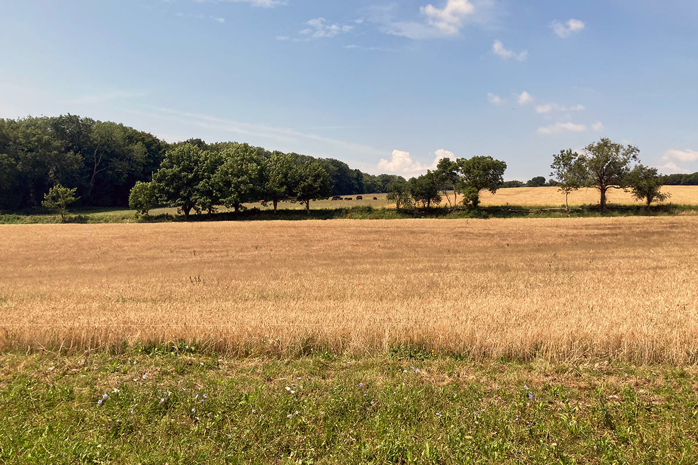

Manor Farm comprises 270 acres of chalk land in the Cerne Valley in Dorset, running up the hill from the river valley to 620 feet, with fine views over south and west Dorset. It has been farmed by the Best family since 1934, fully organically since 1986. We produce pasture fed beef, malting barley, milling wheat and oats, thatching straw, and free range pig meat. Much of the malt from the barley is used by a local brewery, the wheat by a Dorset watermill, and the thatch by a Dorset thatcher.
Our whole ethos is based on care for nature while still producing high quality food, so we are always striving to have a truly regenerative system. Apart from the total avoidance of artificial inputs this includes careful management of our cattle grazing, regular hedgelaying and maintaining living soil, which makes the farm attractive to a diversity of plants, birds and mammals. The cattle, most of which are outwintered in our sheltered fields, play a vital role in maintaining this biodiversity.